Todo al Día
Todo al DíaRESTAURANTES · SERVICIO
Primeros
pasos.
ServicioLos módulos pedidos, preparación y mesas acompañan la atención, desde la solicitud hasta el trabajo del salón.
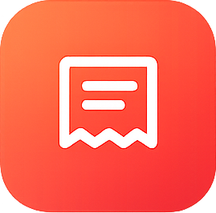
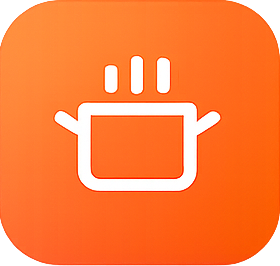
01 Conocer02 Acompañar03 Practicar
Todo al DíaRESTAURANTES · SERVICIO
ServicioLos módulos pedidos, preparación y mesas acompañan la atención, desde la solicitud hasta el trabajo del salón.


Introducción · Servicio
Los módulos pedidos, preparación y mesas acompañan la atención, desde la solicitud hasta el trabajo del salón.
Comenzaremos por la presentación del grupo. Cada módulo conserva su explicación, sus capturas y una actividad de ejemplo para relacionar las funciones.
Esta guía de Primeros pasos reúne los módulos de Servicio. Las referencias a otros grupos permiten reconocer cómo se conecta el trabajo; esos módulos se desarrollan en las otras guías de la colección.
Antes de comenzar · Servicio
Las entradas enlazan con las páginas de esta guía.
Grupos del restaurante
Este grupo reúne 3 módulos disponibles para acompañar la atención, desde la llegada de una solicitud hasta el trabajo del salón.
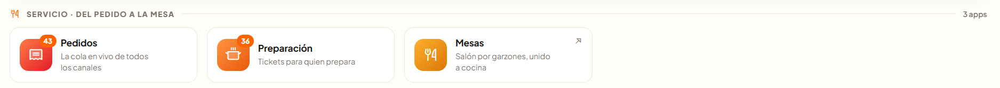
El módulo pedidos reúne las solicitudes; el módulo preparación acompaña al equipo que las prepara; el módulo mesas organiza la atención del salón.
En cada módulo veremos su propósito y sus funciones, y terminaremos con una actividad que enlaza con el siguiente.
Servicio · Módulo Pedidos
Comenzamos por Servicio, el primer grupo del menú. Su primer módulo es el módulo pedidos: reúne las solicitudes del restaurante y ayuda a seguir su atención.
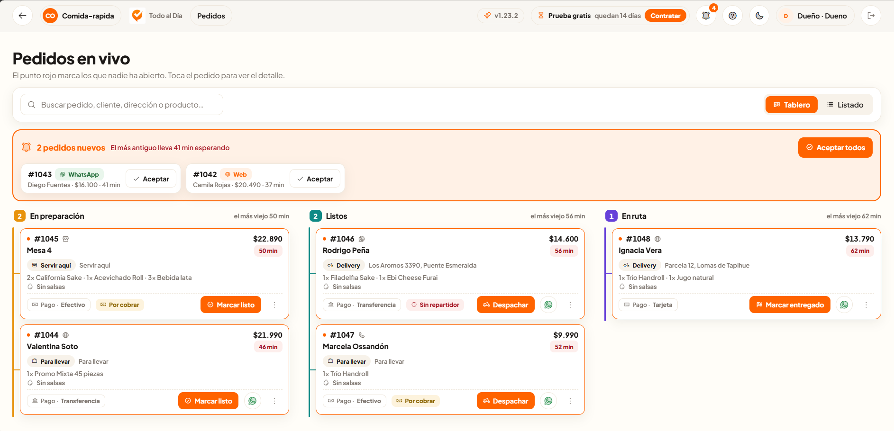
La franja de nuevos pedidos ofrece Aceptar y Aceptar todos. Las columnas ordenan el trabajo en En preparación, Listos y En ruta.
El buscador ayuda a encontrar una solicitud. Tablero muestra tarjetas y Listado organiza la información por filas; al abrir un pedido se consulta su detalle.
Servicio · Módulo Pedidos
Separar los estados permite reconocer qué necesita cada pedido: terminar su preparación, continuar la entrega o confirmar que llegó a destino.
Reúne los pedidos que están en la etapa de preparación. Por ejemplo, una solicitud cuyos productos aún se preparan permanece aquí; Marcar listo permite señalar el siguiente paso.
Identifica pedidos que ya terminaron su preparación. La atención continúa según su modalidad: en el ejemplo de delivery aparece Despachar para seguir con el envío.
Muestra los pedidos que van hacia su destino. En el ejemplo de delivery, Marcar entregado permite confirmar la entrega. Este estado describe el servicio, no si el pedido está pagado.
Servicio · Módulo Pedidos
El detalle reúne lo necesario para comprender la solicitud y reconocer su siguiente paso.
El número identifica la solicitud. El canal, los productos, las cantidades y las notas ayudan a entender cómo llegó y qué requiere.
Entrega indica la modalidad y el destino cuando corresponde. Pago distingue el medio, el estado y el total: Pagado o Por cobrar son datos distintos de la etapa del servicio.
Según el estado, aparecen acciones como Marcar listo, Despachar o Marcar entregado.
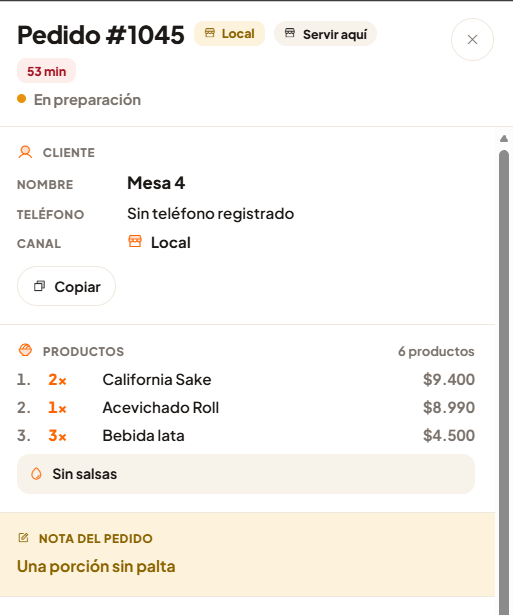
Servicio · Módulo Pedidos · Actividad de ejemplo
Imaginemos que entra una solicitud mientras el restaurante atiende otros pedidos.
Podemos ubicarla entre los pedidos nuevos y abrir su detalle para leer los productos y las observaciones.
Después de Aceptar, podemos seguir la solicitud en En preparación. En un ejemplo de delivery, pasará a Listos al terminar de prepararse y a En ruta al despacharse. Cada columna orienta una tarea distinta.
Con el pedido identificado, seguiremos dentro del grupo Servicio hacia el módulo preparación, el siguiente módulo del menú.
Servicio · Módulo Preparación
Continuamos en el grupo Servicio. Después del módulo pedidos, el módulo preparación ayuda al equipo a organizar el trabajo y reconocer qué está pendiente y qué está listo.
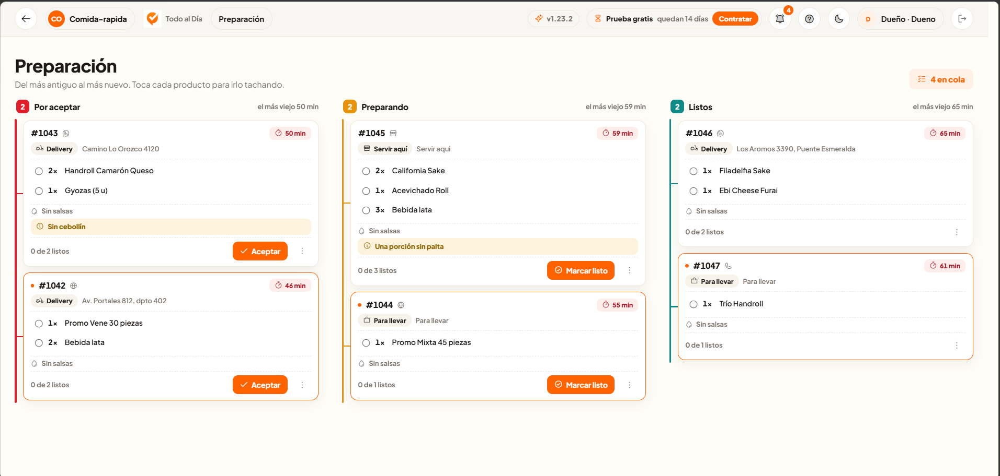
Las columnas Por aceptar, Preparando y Listos ordenan los pedidos del más antiguo al más nuevo.
Cada tarjeta muestra productos, notas y tiempos. Al tocar los productos se van tachando; el contador indica cuántos están listos y Marcar listo permite continuar la etapa.
Servicio · Módulo Preparación
El módulo preparación utiliza la misma organización por estados para ayudar al equipo a reconocer qué debe aceptar, qué está preparando y qué ya está listo.
Reúne las solicitudes que esperan aceptación. Por ejemplo, un ticket recién recibido presenta Aceptar como acción para comenzar su atención.
Reúne el trabajo en curso. Los productos y las notas orientan la preparación; al tachar productos, el contador ayuda a reconocer el avance dentro del ticket.
Separa los tickets cuya preparación ha terminado. Así el equipo distingue lo finalizado de lo que sigue en curso. El menú de estos tickets también ofrece Volver una etapa.
Servicio · Módulo Preparación
El menú de tres puntos reúne opciones de consulta y apoyo para el trabajo de preparación.
Permite Ver el detalle y ofrece avisos de retraso de 5 o 10 minutos, además de Marcar como no visto y Copiar los datos del pedido.
El apartado Imprimir distingue Orden de preparación y Ticket de pedido recibido.
En el menú de un pedido Listo aparece también Volver una etapa.
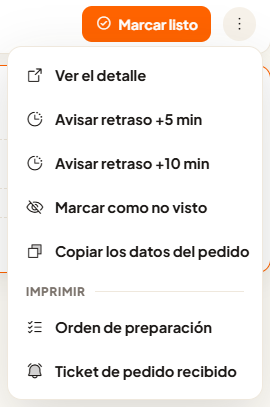
Servicio · Módulo Preparación · Actividad de ejemplo
En el módulo preparación, dentro del grupo Servicio, aparece un ticket para servir en el restaurante.
Podemos reconocer los productos y revisar la observación del ticket, como la indicación sobre una porción.
En Preparando, los productos se van tachando y el contador muestra el avance. La acción Marcar listo permite distinguir el ticket terminado de los que continúan en preparación.
Lo enviado desde una mesa llega a este tablero. Para conocer el origen de esa atención, continuaremos en el grupo Servicio con el módulo mesas.
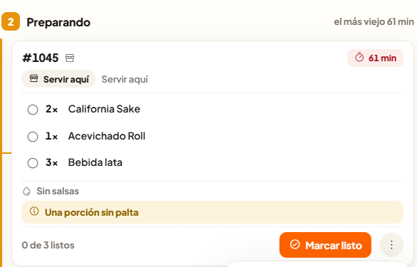
Servicio · Módulo Mesas
El módulo mesas completa el grupo Servicio, después del módulo preparación. Su propósito es organizar la atención del salón y reconocer la situación de cada mesa.
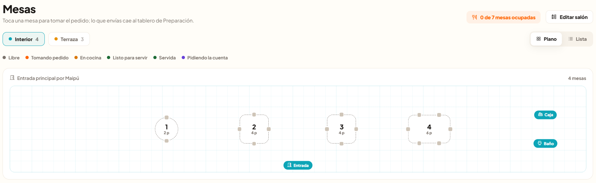
Las pestañas, como Interior y Terraza, separan las zonas. Plano muestra su distribución y Lista presenta número, capacidad y estado; desde ambas vistas se accede a una mesa.
La leyenda distingue Libre, Tomando pedido, En cocina, Listo para servir, Servida y Pidiendo la cuenta. Así se reconoce el momento de atención de cada mesa.
Servicio · Módulo Mesas
Editar salón permite representar las zonas, las mesas y las referencias del espacio del restaurante.
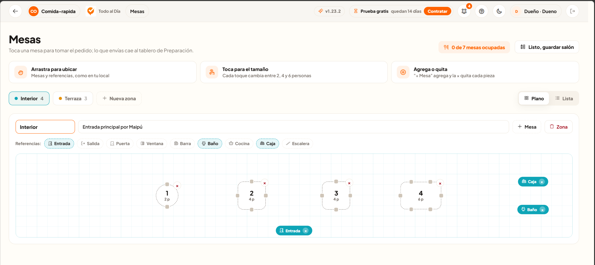
+ Nueva zona permite incorporar otro espacio. Cada zona dispone de nombre y descripción.
Las piezas se arrastran para ubicarlas. Cada toque cambia la capacidad entre 2, 4 y 6 personas; + Mesa agrega una y la × quita una pieza.
Las referencias identifican lugares como la entrada, la cocina o la caja. Listo, guardar salón permite terminar la edición.
Servicio · Módulo Mesas
Una zona permite reunir las mesas de un mismo sector del restaurante. Puede representar, por ejemplo, un patio o un segundo salón.
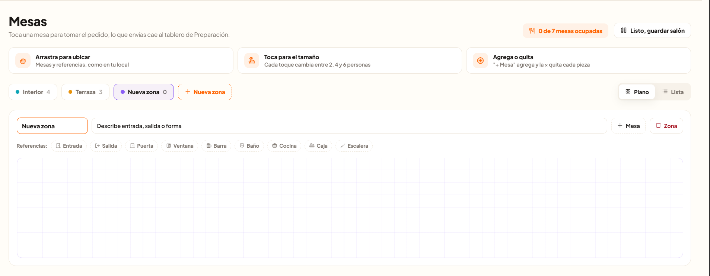
Dentro de Editar salón, la opción + Nueva zona incorpora otro espacio junto a las zonas existentes. La captura muestra la nueva pestaña con cero mesas.
El primer campo permite darle un nombre. La descripción ayuda a reconocer su entrada, salida o forma. El plano vacío queda disponible para organizar sus mesas.
Servicio · Módulo Mesas
Una vez identificada la zona, sus mesas y referencias permiten representar cómo se distribuye ese espacio del restaurante.
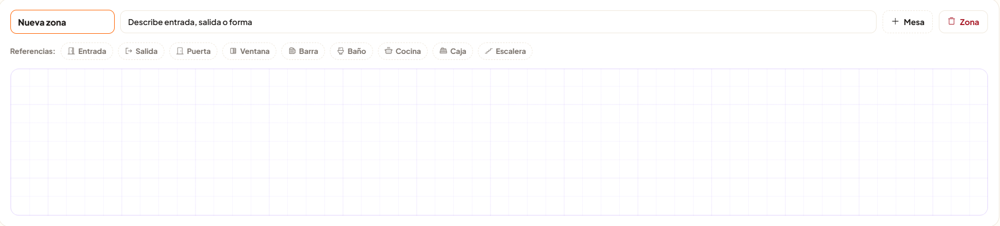
+ Mesa agrega una mesa a la zona seleccionada. La ayuda del editor indica que las piezas se arrastran para ubicarlas y que cada toque cambia la capacidad entre 2, 4 y 6 personas.
Las referencias, como Entrada, Salida o Ventana, ayudan a reconocer el espacio. Al terminar, Listo, guardar salón permite finalizar la edición.
Si el restaurante habilita un patio, podemos crear esa zona, nombrarla y añadir sus mesas. Después, la atención continúa desde una mesa del salón, como veremos a continuación.
Servicio · Módulo Mesas
Al abrir una mesa libre, el panel permite identificar a la persona que acompañará esa atención antes de tomar el pedido.
El encabezado muestra el número, la zona y el estado Libre. Debajo aparece la pregunta ¿Quién atiende esta mesa? y las personas disponibles.
Al elegir al garzón, la mesa se abre para tomar el pedido. La persona seleccionada aparece en el panel, junto al tiempo de atención.
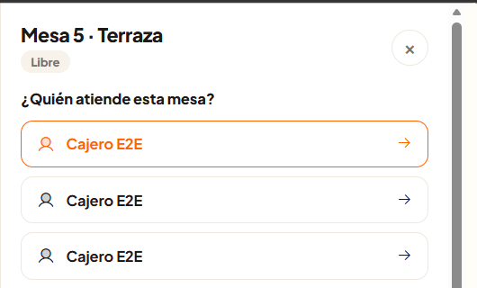
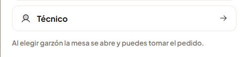
Servicio · Módulo Mesas
Al abrir una mesa aparece el panel para tomar el pedido. Desde aquí se eligen los productos y se prepara su envío a cocina.
El campo Buscar en la carta… y las tarjetas permiten localizar lo solicitado. El encabezado identifica la mesa, la zona y el estado Tomando pedido.
Los productos seleccionados aparecen en Por enviar, con controles para ajustar la cantidad. Enviar a cocina conecta la atención con el módulo preparación.
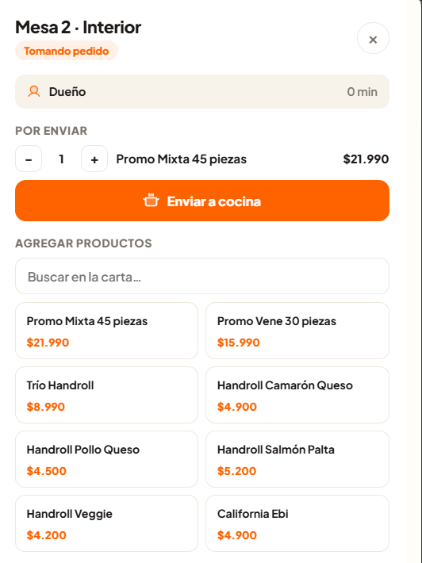
Servicio · Módulo Mesas
La vista Lista permite distinguir las mesas libres de las que ya comenzaron su atención dentro de la zona seleccionada.
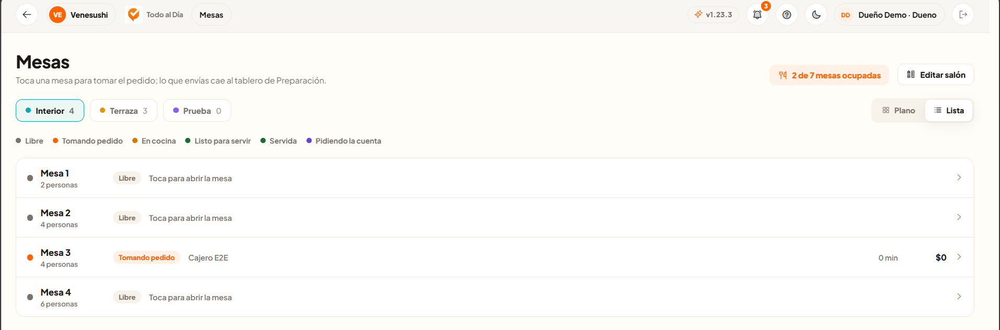
Las filas con el estado Libre muestran la capacidad y la indicación Toca para abrir la mesa.
En una mesa con el estado Tomando pedido aparecen la persona que atiende, el tiempo y el importe. Estos datos ayudan a reconocer quién está a cargo y en qué momento se encuentra la atención.
Servicio · Módulo Mesas · Actividad de ejemplo
Una mesa libre recibe clientes y comienza una nueva atención en el restaurante.
Podemos encontrar una mesa libre en el plano o la lista y elegir quién la atenderá. El panel pasa a Tomando pedido y muestra a la persona seleccionada.
En el panel podemos buscar un producto, revisar su cantidad en Por enviar y reconocer el botón Enviar a cocina. El pedido continúa en el módulo preparación.
En la lista podemos reconocer el estado de la mesa y quién la atiende. Con este ejemplo terminamos el recorrido del módulo mesas y reunimos lo aprendido antes de pasar a la operación diaria.
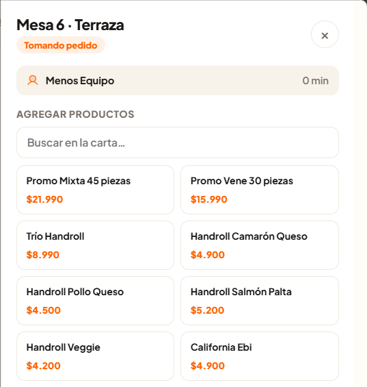
Cierre · Servicio
El cierre de este grupo conecta la atención con el cobro. Ese siguiente tramo se encuentra en la guía de Operación diaria.
El índice de esta guía enlaza con cada explicación y actividad. Las imágenes muestran el negocio de ejemplo y acompañan el contenido de cada módulo.
Te invitamos a revisar las guías de Operación diaria y Gestión. Allí podrás conocer los módulos de esas categorías y cómo se relacionan con las tareas de este recorrido.